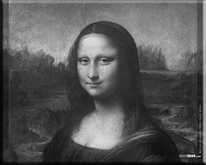
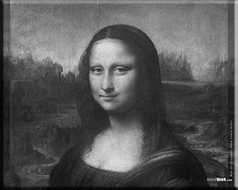

Schedule
Your day will start and end at the Richard Harris Terrace. During the day there are four sessions. Presentations in each of the four Career Tracks will run during each session. These presentations will be in different rooms throughout the College. See the schedule below for more information.
 



CONFERENCE OPENING - RICHARD HARRIS TERRACE
8:30am - 9:00am Registration and Continental Breakfast
9:00am - 9:30am Opening Remarks
LUNCH
12:00pm - 1:30pm
CONFERENCE CLOSING - RICHARD HARRIS TERRACE
4:15pm - 4:30pm Closing Remarks
SESSION I
9:45am - 10:45am
Creative Writing:
Writing for the Stage
Room N415
Fine Arts:
Is a Brush in the Hand Worth Some Dough?
Room N420
Performing Arts:
A Life in the Theatre
Room Theatre II
Media Arts:
Freelance Web Development
Room S312
SESSION II
11:00am - 12:00pm
Creative Writing:
Poet's Paradise
Room N415
Fine Arts:
Mastering the Light
Room N420
Performing Arts:
Dance
Room Theatre II
Media Arts:
From PAs to Auters and Pr Editors
Room S312
SESSION III
1:45pm - 2:45pm
Creative Writing:
Finding Your Voice
Room N415
Fine Arts:
Photography Documentary
Room N420
Performing Arts:
An Actor's Life for Me
Room Theatre II
Media Arts:
What is Graphic Design?
Room S312
SESSION IV
3:00pm - 4:00pm
Creative Writing:
Getting Published
Room N415
Fine Arts:
Art, Hands On
Room N420
Performing Arts:
Making the Band
Room Theatre II
Media Arts:
Make it Move: Motion Graphics and Animation
Room S312